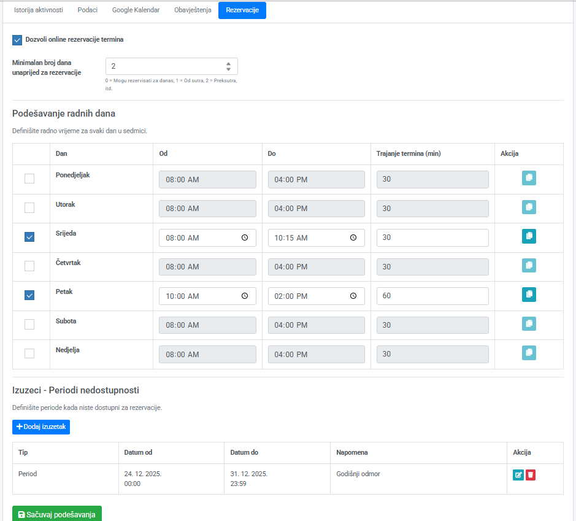
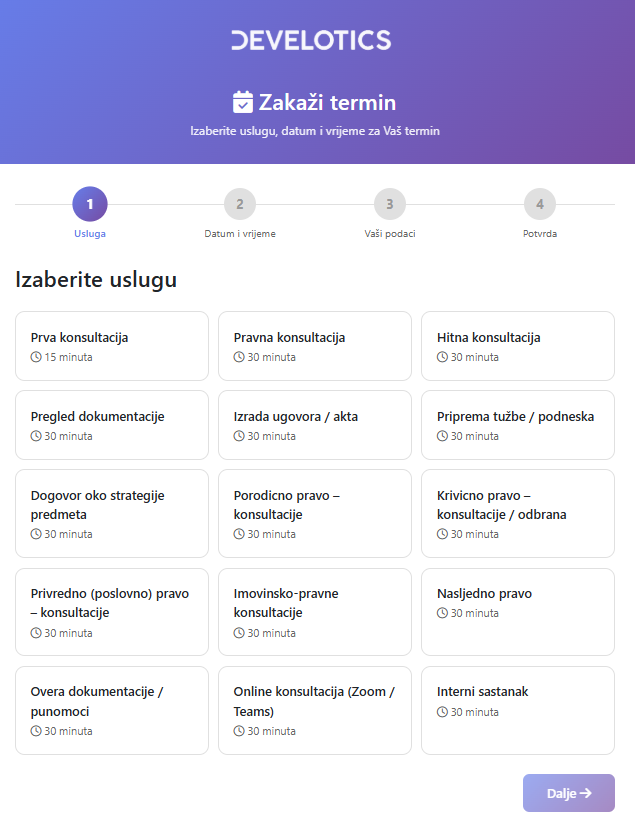
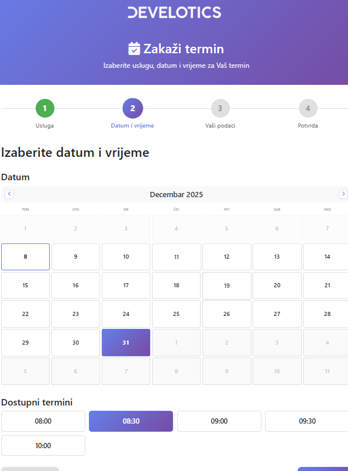
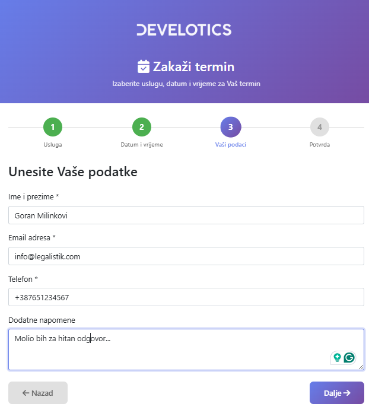
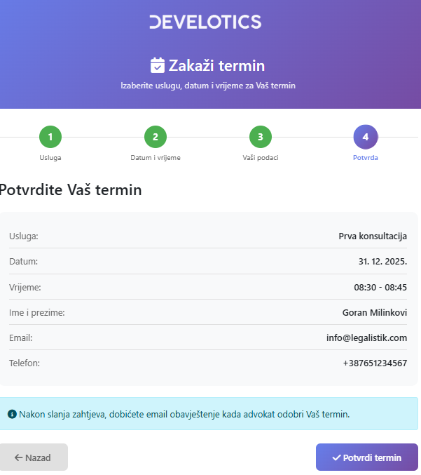
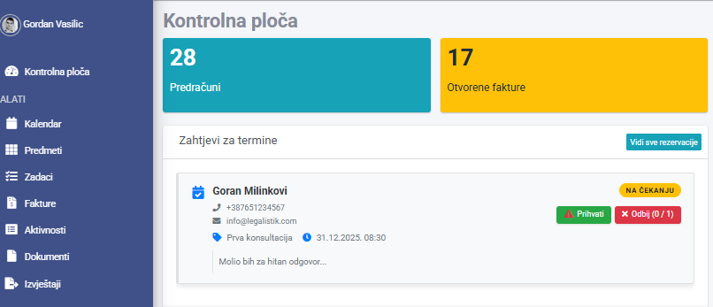

1. Uvod – Šta modul radi i kome je namijenjen #
Modul za online rezervaciju termina omogućava vašim trenutnim i potencijalnim klijentima da direktno zakazuju sastanke bez potrebe da vas pozivaju, šalju email i druge poruke. Kada klijent pošalje zahtjev, vi ga možete sa jednim klikom prihvatiti ili odbiti – sve se automatski upisuje u vaš kalendar, a klijent dobija email potvrdu ili razlog odbijanja.

Prednosti:
- Bolja organizacija – “Svi zahtjevi, datumi, vremena, imena i kontakti su na jednom mjestu. Nema zaboravljanja, nema zabune, nema ‘je li on rekao ponedjeljak ili srijedu?'”
- Profesionalniji utisak – “Klijenti vide da ste tehnološki opremljavani i moderni. To jača povjerenje i čini vašu kancelariju da izgleda kao profesionalan, uspješan ured
- Povećanje broja novih klijenta – “Mnogi novi klijenti zahtijevaju online mogućnost. Ako im je nudite – oni će zakazati. Ako je nemaate – otići će kod konkurencije.”
- Vremenska ušteda – “Modul vam vraća 20-30 minuta svakog dana koje ste do sada gubili na dogovoru termina telefonom ili emailom. To je nekoliko sati sedmično”
2. Kako aktivirati modul i dobiti link #
Gdje se modul aktivira? #
Potrebno je prvo podesiti koji advokati unutar kancelarije imaju pravo da primaju zahtjeve za rezervacije termina za konsultacije.
- Idite u Saradnici → i aktivirajte Online rezervacije termina. Ako želite da taj advokat u svom kalendaru vidi termine konsultacija drugih saradnika, aktivirajte Vidi rezervacije termina saradnika.
Nakon toga aktivirajte modul online rezervacije termina i podesite link prema kalendaru
- Idite u Kancelarija→ Sistemska podešavanja.
- Aktivirajte opciju “Online rezervacija termina”.
- Sistem će vam automatski generiati link (naziv kancelarije možete promijeniti):
https://kalendar.legalistik.com/NazivVaseKancelarije - Kllikom na dugme Generiši QR Kod možete generisati QR kod koji onda možete dijeliti kao i link. Svako ko skenira taj kod sa mobilnim telefonom automatski će biti preusmjeren na vaš link za rezervacije.
Kako koristiti link i QR kod? #
Ovaj link i sliku QR koda možete postaviti na:
- Vašu web stranicu (u zaglavlje, footer ili posebnu stranicu)
- Google Business profil (u linku do web sajta)
- Email potpis (sa tekstom “Zakažite online sastanak”)
- Instagram i Facebook (u bio ili kao link u objavi)
- LinkedIn profil (u zaglavlju ili u opisu)
Kako podesiti kada je advokat dostupan za konsultacije? #
Svaki aktivirani advokat može podesiti svoju dostupnost za termine za konsultacije:
- Idite u Profil → Rezervacije.
- Podesite koji je minimalan broj dana za rezervaciju termina.
- Podesite kojim danima u sedmici i u kojim terminima ste dostupni za konsultacije
- Dodajte izuzetke (recimo godišnji odmor)

3. Kako klijent zakazuje termin – Korak po korak #
Kada klijent klikne na vašu link ili QR kod, otvara mu se stranica za rezervaciju termina, https://kalendar.legalistik.com/NazivVaseKancelarije, i prolazi kroz 4 jednostavna koraka:
KORAK 1 – Izbor usluge #
Klijent vidi sve dostupne usluge koje ste ponudili:
- Prva konsultacija (15 minuta)
- Pravna konsultacija (30 minuta)
- Hitna konsultacija (30 minuta)
- Online konsultacija (30 minuta)
- Pregled dokumentacije (30 minuta)
- I ostale usluge koje ste kreirali
Napomena: Pored svake usluge piše trajanje. Klijent jednostavno klikne na onu koju želi.
Savjet: Prvo konsultaciju ponudite kao kraću (15 min) da motiviše nove klijente da se jave.

KORAK 2 – Izbor datuma i vremena #
Sistem prikazuje:
- Kalendar mjeseca sa označenim dostupnim danima
- Ispod kalendara: slobodna vremena za izabrani dan (npr. 08:00, 08:30, 09:00, 09:30…)
Klijent:
- Klikne na datum koji mu odgovara
- Odabere vrijeme iz liste dostupnih termina
- Klikne “Dalje”
Važno: Sistem pokazuje samo dane i vremenske intervale koja ste vi označili kao dostupne.

KORAK 3 – Unos podataka #
Klijent unosi svoje podatke:
- Ime i prezime (obavezno)
- Email adresa (obavezno – na ovaj email će dobiti potvrdu)
- Telefon (obavezno – za hitne slučajeve i podsjećanje)
- Dodatne napomene (opciono – preporuka je da klijent ukratko napiše o čemu se radi, npr. “Pitanja o naslijeđu”, “Radni spor”, itd.)
Savjet za vas: Broj koji dobijate omogućava vam da brzo kontaktirate klijenta ako trebate.

KORAK 4 – Pregled i potvrda #
Prije nego što pošalje zahtjev, klijent vidi stranicu sa rezimeom:
- Odabrana usluga (npr. Prva konsultacija)
- Datum i vrijeme (npr. 31.12.2025, 08:30–08:45)
- Ime i prezime
- Email adresa
- Telefon
- Napomena
Dugme: “Potvrdi termin” šalje zahtjev nakon čega klijent vidi poruku:
“Zahtjev za termin uspješno poslan!”
Hvala Vam! Vaš zahtjev za termin je primljen i biće razmatran. Dobićete email obavještenje kada advokat odobri Vaš termin.
Klijent nakon toga dobija email potvrdu sa svim podacima.

4. Kako vi obrađujete zahtjev kao advokat #
Gdje vidim nove zahtjeve? #
U vašem Legalistik nalogu idite u:
- Kontrolna ploča → Zahtjevi za temine

Što se dešava kada prihvatim zahtjev? #
- Kliknete “Prihvati”
- Sistem automatski unosi termin u vaš kalendar
- Klijent dobija email potvrdu sa datumom i vremenom potvrđenog sastanka.
Što se dešava ako odbijam zahtjev? #
- Kliknete “Odbij”
- Unesete razlog odbijanja (npr. “Već sam zauzet tog datuma”, “Nemam odgovore za tu vrstu slučaja”, itd.)
- Klijent dobija email obavještenje sa:
- Vašim izvinjenjem i razlogom
- Mogućnošću da zatraži drugi termin
Savjet: Ponudite alternativu – klijenta je najbolje da se malo više vremena pročeka nego da se odbije bez mogućnosti.
6. Savjeti za najbolju upotrebu #
✅ Što trebate redovno raditi: #
- Ažurirajte vreme dostupnosti – ako niste dostupni, onemogućite termin tog dana. Bolje je da klijent ne može da zakaže nego da potom odbijate.
- Brzo odgovarajte na zahtjeve – idealno u roku od 1–2 sata. Klijent čeka potvrdu.
- Unijet razumne razloge – ako odbijate, napomena kao “Već zauzeto” je bolja od prazne odbijanju.
✅ Kako privući više klijenta: #
- Postavite link na sve mjesta:
- Glavna web stranica
- Google Business profil
- Facebook stranica kancelarije
- LinkedIn profil
- Email potpis
- Prvu konsultaciju učinite dostupnijom:
- Kraće vrijeme (15 min umjesto 30)
- Više dostupnih termina
- Manji sate (npr. prvi termin u 08:00)
- U email potpisu napišite:
- “Zakažite vašu prvu konsultaciju besplatno [LINK]”
- “Slobodni termini: ponedjeljak–petak, 10:00–17:00”
- U opisima usluga recite:
- “Nije potreban poziv – zakažite online”
- “Odgovoriće vam u roku od 1 sata”
✅ Prednosti za vas: #
- Manje telefonskih poziva – više vremena za rad
- Profesionalniji utisak – pokazuje da ste tehnološki spreman
- Bolji evidencija – svi zahtjevi se bilježe i mogu se arhivirati
- Manja mogućnost zaboravanja termina – sve je u kalendaru
- Klijenti su zadovoljniji – dobivaju što brže odgovore
7. Česta pitanja (FAQ) #
P: Mogu li koristiti modul bez svoje web stranice?
O: Da, potpuno! Link možete podijeliti direktno klijentima, staviti ga na Google Business profil, Instagram… Modul radi samostalno.
P: Što ako klijent unese pogrešan email?
O: Email se šalje na adresu koju je klijent unio. Ako klijent greši, dobija obavještenje da je zahtjev poslan – preporuka je da provjeri spam folder.
P: Mogu li odbiti zahtjev bez razloga?
O: Ne
P: Što se dešava ako dva klijenta zatraže isti termin?
O: Ako više advokata u jednoj kancelariji ima aktiviranu mogućnost primanja rezervacija, zahtjevi se mogu primati dok god ima slobodnih advokata.
P: Mogu li promijeniti vrijeme termina nakon što ga prihvatim?
O: Morate pozvati klijenta telefonom i pomjeriti konsultacije.
P: Je li modul besplatan?
O: Da, svi korisnici Legalistika imaju uključen sistem za rezervacije besplatno u svom nalogu.
8. Kontakt za podršku #
Ako imate pitanja ili problema sa modulom:
- Email: [email protected]